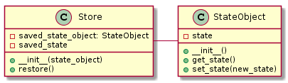
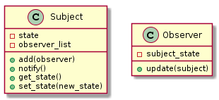

sujet Test 5 : classes et objets (le retour)
- François Brucker
1
On utilise les deux classes de la figure suivante :

Les attributs sont considérés comme privés
1.1
Explicitez le lien de dépendance entre Store et StateObject
1.2
Trois Propositions de code sont données :
proposition 1 :
state = StateObject()
state.set_state(1)
store = Store(state)
store.saved_state = state.get_state()proposition 2 :
state = StateObject()
state.set_state(1)
store = Store(state)proposition 3 :
state = StateObject(1)
store = Store(state)1.2.1
Une proposition est incorrecte en python. Laquelle et pourquoi ?
1.2.2
Parmi les deux propositions correctes, laquelle privilégierez vous ? Et pourquoi ?
question 2
La figure suivante montre le diagramme UML du design pattern Observer. Les objets de la classe Observer (ou ceux héritant d'elle) s'inscrivent à un objet de la classe Subject (via la méthode add) pour être prévenus de chaque changement d'état (via la méthode notify).

On vous demande d'écrire le code en python.
2.1
Quel est la fonction de ce couple de classe (choisissez la bonne réponse parmi les 3 possibilités ci-après) ?
- permet aux objets observant un sujet de le modifier à tout moment ?
- permet aux objets observant un sujet d'être informé des changements d'un sujet par celui-ci ?
- permet au sujet de modifier les objets qui l'observent ?
2.2
Écrivez la méthode add de la classe Subject, qui ajoute l'objet passé en paramètre à la liste des éléments observant le sujet.
2.3
Écrivez la méthode update de la classe Observer qui place dans subject_state l'état courant d'objet de la classe Subject passé en paramètre.
2.4
Écrivez la méthode notify de Subject qui permet la mise à jour des éléments observant le Subject
2.5
décrivez un cas d'utilisation possible de ce pattern bien étrange.